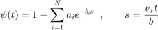
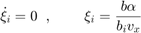
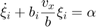
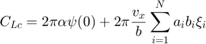
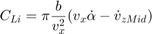
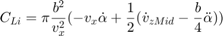

Contents
function [dQaero,Qaero,Fqc,Mqc,Drag,alpha] = aero_stripTheory_usteady_LeishmanIndicial(Qaero,rho,Vinf,V3qrt,xAp,yAp,zAp,Omega,chord,width,AIC,C_D0,qsteady)
% - C.Howcroft
coded implementation of Leishman's Indicial Response Method
[use publish button to view latex comments]
% INPUT ARGUMENTS % Qaero [nxv] - aerodynamic state vector % rho [1] - air density % Vinf [3x1] - free stream flow vector (magnitude = flight speed) % V3qrt [3xv] - velocity of the three quarter chord point % xAp [3xv] - unit vector in the strip chordwise direction from leading to trailing edge % yAp [3xv] - unit vector perpendicular to xAp and normal to the aerofoil cross sectional plane, pitch up is positive in this direction % zAp [3xv] - out of plane unit vector perpendicular to xAp and yAp % Omega [3xv] - rotational velocity of the aerodynamic strip % chord [1xv] - chord length of the strip in the xAp direction % width [1xv] - width of the strip in the yAp direction % AIC [1xv] - aerodynamic influence coefficients by which the aerodynamic forces are scaled % C_D0 [1xv] - coefficient of parasitic drag, calculated externally by empirical function and supplied by user (set C_D0=0 to neglect this effect) % qsteady [true/(false or unspecified)] - quasi steady flag, set to true to bypass unsteady terms % Notes: % - a single arbitrary inertial reference coordinate system must be selected in which to specify the [3x...] input quantities % output quantities are returned in this same reference system % - this aerodynamic function is vectorised by stacking multiple inputs along dimension v % v may be along any dimension except the 1st (dim v = 2 in these example comments) % the output is vectorised along the same dimension % OUTPUT % dQaero [nxv] - time derivative of aerodynamic state vector % Qaero [nxv] - if qsteady is true then Qaero is assigned the quasi steady state value, else Qaero is simply passed through the function unchanged % Fqc [3xv] - aerodynamic force vector generated at the 1/4 chord location excluding parasitic drag % Mqc [3xv] - aerodynamic moment vector generated at the 1/4 chord location % Drag [3xv] - parasitic drag vector
Define Aerodynamic Parameters
%Calculate apparent flow vector at 3/4 chord Vflow = bsxfun(@plus,Vinf,-V3qrt); velocity = sum(Vflow.^2,1).^0.5; %Take components of this apparent flow in the strip coordinate system vx3qrt = sum(Vflow.*xAp,1); %vy3qrt = Vflow.'*yAp; Not Used vz3qrt = sum(Vflow.*zAp,1); %neglect linear and angular acceleration contributions to non-circulatory terms dvzmid_dt = 0; d2alpha_dt2 = 0; % Dynamic Pressure Pdyn = 0.5*rho*velocity.^2; %Angle of attack of strip alpha = atan(vz3qrt./vx3qrt); %d[alpha]/dt dalpha_dt = sum(Omega.*yAp,1); %Half chord b = chord/2;
Not enough input arguments. Error in aero_stripTheory_usteady_LeishmanIndicial (line 38) Vflow = bsxfun(@plus,Vinf,-V3qrt);
Define Wagners Function
Exponential approximation of Wagners Function psi(t)

$ for R.T. Jones approximationaiCoeffs = [0.165 ; 0.335];
biCoeffs = [0.041 ; 0.32 ];
%initial value of Wagners Function
psi_0 = 1 - sum(aiCoeffs);
Aerodynamic State ODE
Bypass unsteady terms if qsteady flag is 'true'

if nargin > 12 && qsteady dalpha_dt = 0; Qaero = bsxfun(@times, b.*alpha./vx3qrt, 1./biCoeffs); dQaero = Qaero*0; else
else get state derivative from ode

dQaero = bsxfun(@plus, alpha , -bsxfun(@times, (vx3qrt./b) , bsxfun(@times,biCoeffs,Qaero) ) );
end
Lift Coefficient
Circulatory Component

C_Lc = 2*pi*alpha*psi_0 + 2*pi*vx3qrt./b.*sum( bsxfun(@times,aiCoeffs.*biCoeffs,Qaero) , 1 );
Non-circulatory Component

C_Li = pi*b./vx3qrt.^2.*( vx3qrt.*dalpha_dt - dvzmid_dt );
Add circulatory and non-circulatory components to obtain lift coefficient
CL = C_Lc + C_Li;
Moment Coefficient
Circulatory Component
C_Mc = 0; %zero when taken at quarter chord
Non-circulatory Component

C_Mi = pi*b.^2./vx3qrt.^2.*(-vx3qrt.*dalpha_dt + 0.5*(dvzmid_dt - b/4*d2alpha_dt2) );
Add circulatory and non-circulatory components to obtain lift coefficient
CM = C_Mc + C_Mi;
Create Aerodynamic Force Vectors
Lift
Fqc = bsxfun(@times, Pdyn.*chord.*width.*AIC.*CL , zAp); %Include circulatory component of drag by casting this aero force normal to the strip (ie. in the zAp direction).
Moment
Mqc = bsxfun(@times, Pdyn.*chord.*width.*AIC.*CM , yAp);
Parasitic Drag
Drag = bsxfun(@times, Pdyn.*chord.*width.*AIC.*C_D0 , xAp);
end